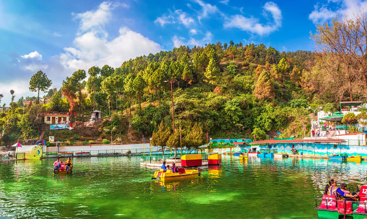
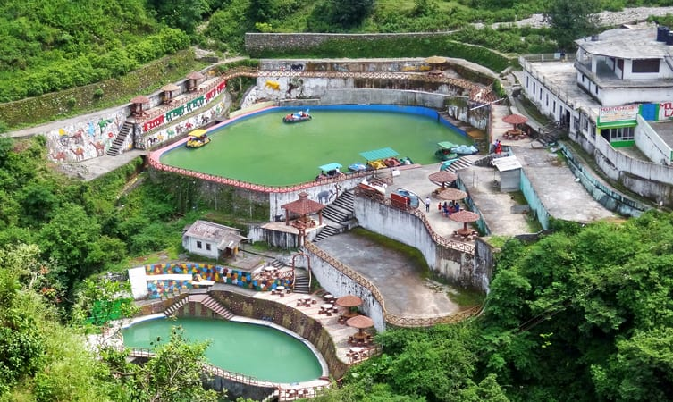
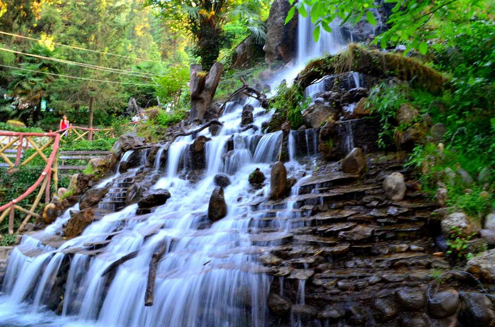
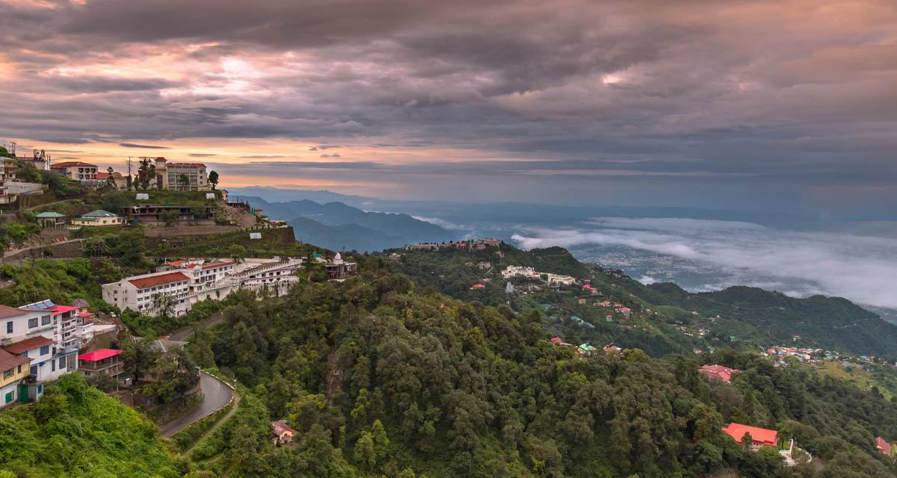

1 / 3

Caption one
2 / 3

Caption Two
3 / 3

Caption Three
3 / 3

Caption four
3 / 3

Caption five
Though Mussoorie has a year-round pleasant climate, the best time to visit Mussoorie is during the summer season (from March to June). With temperatures ranging between 15 and 25 degrees Celsius, summers offer perfect weather conditions to traverse the hill town, and hence, it is also regarded as the peak season in Mussoorie. Since Mussoorie witnesses heavy rainfall in monsoon season, therefore, August to September is not a good time to explore the hill station.
If you are planning to go to a pleasantly chilly hill station, then Mussoorie might be the best choice. This hill station in the Indian state of Uttarakhand has a lot to offer and is accessible round the year, with great weather. Mussoorie is famous for its natural beauty and the wonderful climate and offers a memorable experience in all seasons. Read on to plan the best time when you should visit Mussoorie.
The summer heat also melts the ice caps high in the mountains, feeding the streams and the water falls below. This is the best time to go to Mussoorie for treks and hikes across the country side. The surrounding areas have many waterfall point that one can visit, such as Kempty falls which forms the beautiful lake mist. The Jharipani Falls and the Mossy Falls too come down in full force, turning the surroundings lush green. Nature enthusiasts can visit the Benog Wildlife Sanctuary or even the Lal Tibba, Mussoorie’s highest peaks, to enjoy the most invigorating weather of Mussoorie. Resorts and hotels set in the beautiful surrounding make summer the best time to visit Mussoorie for honeymoon.